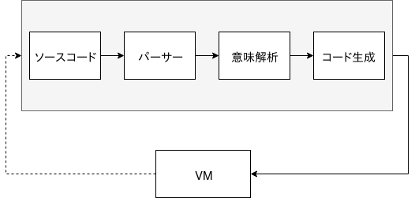

この記事は何?
セキュリティキャンプ 修了生進捗 #seccamp OB/OG Advent Calendar 2018 20日目。
この記事では，セキュキャンが始まるちょっと前から作り始めた自作JSエンジン rapidus の進捗と，簡単に内部構造を説明していきたいと思います．
目次
- 大まかな仕様
- 内部構造
- パーサー
- コード生成
- VM
- ….
1. 大まかな仕様
TL;DR
- だいたいJSっぽいコードを書いて実行できる (規格にまだ沿えていない)
- REPLがちょっと使える
- Tracing-JITに部分的に対応している (うまくいくと速い)
- 最近，Rustで書いたDLLを
requireから使えるようになった (もはやなんでもできる!) - また最近，非同期処理の実装を始めた
ちょっと詳しく
1. だいたいJS
だいたいJSというのは，規格に沿えていなかったり 意外と基本的な機能が抜けている，という意味です．例えば，この記事を書いている時点ではObjectオブジェクトがなかったり，組み込みオブジェクトの機能が足りていなかったりします．
ですが大体はJSなので，そこそこのコードは動きます．例えば，ミラーラビン素数判定法で素数(<2^32)を判定したい! というニッチな需要にも対応できます．
function prime(n) {
if (n == 2 || n == 3) return true;
if ((n & 1) == 0) return false;
var d = n - 1;
while ((d & 1) == 0) d = Math.floor(d >> 1);
for (var k = 0; k < 20; k++) {
var t = d;
var x = modpow(1 + Math.floor(Math.random() * (n - 2)), t, n);
while (t != n - 1 && x != 1 && x != n - 1) {
x = modpow(x, 2, n);
t = t << 1;
}
if (x != n - 1 && (t & 1) == 0) return false;
}
return true;
}
function modpow(base, power, mod) {
var result = 1;
while (power > 0) {
if ((power & 1) == 1) result = (result * base) % mod;
base = (base * base) % mod;
power = Math.floor(power >> 1);
}
return result;
}
for (var i = 2; i < 100000; i++)
if (prime(i)) console.log(i);
上記のようなコードは普通に動作します．一応，NodeJSと戦ってみる． (上記のコードからconsole.log(i)だけ消して;にしたコードを実行しました)
$ time node miller.js
real 0.19
user 0.18
sys 0.01
$ time ./target/release/rapidus miller.js
real 0.19
user 0.19
sys 0.00数値だけ使ってるループとかはJITの対象になるので，そこそこ速く動きます．JITについてはまた後で.
あと，動作確認済みのサンプルコードは./examples/に入っています．(どれも微妙なコードばっかりなので，適当に先にNodeJSとかで実行して出力を確認してみてください)
2. REPL
そのままです. REPLがちょっと使えます．
$ ./target/release/rapidus
> var x = 123
> x
123
> x + 111
234
> $ ^ 1
runtime error: reference error: '$' is not defined
> ..
>> function f(x) {
>> if (x === 1) return 1;
>> return f(x - 1) * x;
>> }
>> ..
> f(5)
120
> Function === f.__proto__.constructor
true
> Function.prototype === f.__proto__
true
> [] === []
false..で複数行入力を開始できるようになっていますが，不便なので直したいですね．
3. Tracing-JIT Compiling
トレーシング実行時コンパイル（トレーシングじっこうじコンパイル、トレーシングJIT、英: Tracing just-in-time compilation）は、プログラムの実行を最適化するために、実行時（runtime）に仮想マシンが用いる技術の一つ。頻繁に実行される演算の並びを記録し、それをネイティブコードにコンパイルしてから実行する。通常の実行時コンパイラ（just-in-time compiler、JIT）はメソッド毎にこれを行っており、この点が異なる。
Tracing-JITに対応しているので，いい感じのコードを書くといい感じの速度で実行されます．
現在は関数，ループ単位でJITコンパイルを行っていて，数値やブール値を使った処理をしている場合(console.logでは文字列を使っていいけど)はJITの対象となります．これがいい感じのコードってわけです．
以下のようなフィボナッチ数を求める関数は当然JITコンパイルされて実行されます．
function fibo(x) {
if (x < 2) return 1;
return fibo(x - 1) + fibo(x - 2);
}
3.1 ちょっとだけ仕組みの解説
rapidusでは関数単位，ループ単位でJITを行いますが，関数のほうは呼ばれるときにJITするだけで特に面白くないので，ループのほうをちょっと解説します．
rapidusのVMの命令群にはLOOP_STARTという命令があります. LOOP_STARTはその場所からループが始まることを意味し，オペランドにはループの終了位置を相対距離で表現したものを取ります．
LOOP_START ループの終了位置(相対距離)
何をするのかというと, 以下のようなことです.
ループの中身がすでにJITコンパイルされているか確認する
ループ内部にJITコンパイル出来ない命令があったことを知らせるフラグが立っていたら，特に何もしないで3に飛ぶ
コンパイル済みなのでそれを実行して，VMのプログラムカウンタを正しい位置にセットする. 3に飛ぶ
ループが一定回数実行されたか確認する
真なら，ループの中身をJITコンパイル
- コンパイルしたけど，ループ内部にJITコンパイルできない命令があったら，それを意味するフラグを立てる. 3に飛ぶ
- ちゃんとコンパイルできたら実行. VMのプログラムカウンタを正しい位置にセット．コンパイルして生成されたコードは取っておく. 3に飛ぶ
偽なら，ループの実行回数をインクリメント. 3に飛ぶ
おわり
LOOP_STARTを挿入してやれば，勝手にVMがJITしてくれるってわけですね．便利．
実際には以下のように使われます．[005, 00C) がループの中身のようです．
000 何らかの命令
...
005 LOOP_START 7 # == 0xC(12) - 0x5
007 何らかの命令
...
00C 何らかの命令
3.2 JITって アセンブラでも書いたの?
いいえ．LLVMの力を借りて作りました．
4. Power of DLLs
NodeJS用のコードを見ていて，requireするモジュールってC++とかで書けるのかー，なんでもできて楽しそうだなぁ，と思ったので自分も作りました．
RustでDynamic Link Libraryを作って，requireで読み込ませると使えます．詳しいやり方はREADMEに書いてあるのでそちらを参照してください．
var fs = require("fs") # カレントディレクトリにlibfs.(so|dll|dylib)という名前
# のファイルがあれば, そこから読み込む
fs.writeFileSync("a.txt", "hello") # 適当に作ったwriteFileSyncを呼び出せる
IoT機器とか，自分の作った言語処理系からいじったりできたら楽しいそうですよね．
5. 非同期処理もどき
まだ最近作り始めたばっかりで，非同期処理と言って良いのかよくわからないレベルのものです．
一応，setTimeout, setInterval, clearTimeout, clearIntervalなどを部分的に利用することができます．昔懐かしいWebサイトで沢山使われていそうな関数たちですね．あと，ファイルを非同期で読み込める関数も作ってみました(現在はaioブランチにある)．意外とちゃんと動いているので今後が楽しみです．
2. 内部構造
内部構造なんて大層なものではないですが、大体こんな感じ:

ソースコード→パーサー→コード生成と段階を経てVMで実行できる形式に変換されます．
VMから点線で矢印が出ていますが，これはevalやrequireなんかでVMからソースコード→…→コード生成をしないといけない場合があるからです．
パーサー (src/parser.rs)
構文解析器（こうぶんかいせきき）とは、構文解析をおこなうプログラム。パーサ (parser)とも。プログラミング言語処理系の入力部分が代表的であるが、それに限らず設定ファイルの読み込みなど、構造を持った入力テキストの処理を行う。自然言語処理でも使われる。
rapidusのパーサーは基本的に手書きの再帰下降構文解析器で構成されています．若干コード生成に関係するような処理もしていますが，基本的にはパーサーとしての機能のみを果たしています．特に面白い実装がしてあるわけでもないです．
コード生成 (src/vm_codegen.rs)
コード生成とは言っていますが，意味解析も少し含んでいます．
基本的にはパーサーが生成したASTを巡回しながらVM命令を生成していくだけです．